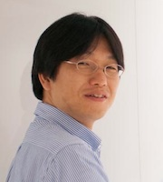

グリー 開発本部テクニカルリードエンジニアの坂本一樹が、UnityやHTML5を活用する新しいゲームアニメーションエンジンLWFについて詳細に解説するカンファレンスです。
2012年11月15日(木) 開場：18:30、終了：22:00
東京都港区六本木6-10-1 六本木ヒルズ森タワー
グリー株式会社
以下より登録をお願いします。
http://atnd.org/event/GREETechTalk01
ハッシュタグ: #greetech01
藤本真樹 |
1979年生まれ。1999年より株式会社アイアイジェイテクノロジーにて、アプライアンスサーバシステムの構築に従事。 2001年に上智大学文学部卒業後、株式会社アストラザスタジオを経て、2003年2月有限会社テューンビズに入社。 PHP等のオープンソースプロジェクトに参画、企業におけるOSSのコンサルティング等を担当。 2005年6月グリー入社。取締役最高技術責任者に就任。PHPのフレームワーク「Ethna」のメイン開発者として知られ、KeyValue Store「Flare」の開発も行う。 |
芳賀洋行 |
グリー開発本部CTO室。Autodesk社で開発エンジニア/技術コンサルタントとしてトップゲーム会社の開発工程の改善を行う。2011年にグリーに参画し、新規ソーシャルゲームのエンジニアリーダー兼プロダクトマネジャーとしてプロジェクトを統括。同時にロンドンスタジオ・エンジニアマネジャーとしてスタジオ立ち上げを行う。2012年10月から現職。会津大学コンピュータ理工学部卒。グロービス経営大学院MBA Candidate。 |
|  坂本一樹 |
グリー開発本部CTO室。「太鼓の達人７」「くまうた」などのソフトウェアエンジニアを経てグリーへ。Stack Overflowのreputationは7000以上。著書に『エキスパートObjective-C』(インプレスジャパン)『エキスパートObjective-CプログラミングーiOS/OS Xのメモリ管理とマルチスレッド』(達人出版会)『Pro Multithreading and Memory Management for iOS and OS X: with ARC, Grand Central Dispatch, and Blocks 』(Apress) がある。 |